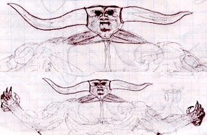
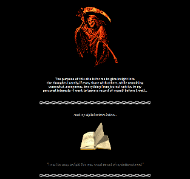
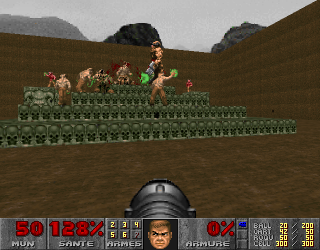
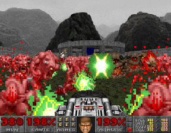

<!DOCTYPE html>
<html>
<title>U.A.C. LABS | Doom: Rediscovering History</title>
	<meta charset="utf-8">
	<meta content="OWLY.FANS" property="og:title" />
	<meta content="Because Sometimes Doom is just bad" property="og:description" />
	<meta property="og:image" content="https://owly.fans/floppy.png">
	<meta content="#9B4F96" data-react-helmet="true" name="theme-color" />
    <meta name="keywords" content="owly, cass python, neocities, neozones, brit, uk, archive, site ran by a stud, england, wales">
	<link rel="shortcut icon" type="image/x-icon" href="../../../favicon.ico">
    <link rel="stylesheet" href="../../style.css">
    </html>
	    <body>
<p><a href="../">Back to index</a></p>
<h1>U.A.C. <yell>Labs</yell></h1>
<p></p>
<hr>
<p></p>
<p><div class="tag">

<h3><p>Content Warning</p></h3>
<p>This page will talk about Doom mods made by <a href="https://en.wikipedia.org/wiki/Eric_Harris_and_Dylan_Klebold">Eric &#xAB;<yell>Reb</yell>&#xBB; Harris</a>, one of the two mass murderer who caused the <a href="https://en.wikipedia.org/wiki/Columbine_High_School_massacre">Columbine High School massacre in 1999</a>.</p>
			
			<p>We also talk briefly about the death of <a href="https://en.wikipedia.org/wiki/Sol_Pais">Sol Pais</a>, as well as themes of suicide, and some uses of vulgarity are used within this page. If you want to read something that's lighter, please click away now.</p>
	</div><p>
<em>Cass &#xAB;Owly&#xBB; Python, 2023-01-15. Published 2024-03-24.</em>

<p>For <a href="https://en.wikipedia.org/wiki/id_Software">id Software</a>, the success of Doom wasn't <em>all that</em> unexpected. The Year prior in 1992, Nazi shoot-em-up <a href="https://doomwiki.org/wiki/Wolfenstein_3D">Wolfenstein 3D</a> saw a big success for the boys at id, including sales for expansion packs, so thanks to this, they kind of knew that they had something great on their hands with their upcoming game, even before it was released, they even <a href="https://doomwiki.org/wiki/Doom_in_workplaces">expected it to slow down places of work</a> when people would be playing their game, rather than their office jobs. And they were right to think that. <em>Doom</em> and its sequel made id Software a lot of money thanks to the sheer amount of sales it made, so it should not be seen as all that much of a shock that Eric Harris would have been a large fan of <em>Doom</em>, after all, he would have been 12 in 1993 when the game was published, and let's not lie, what 12-year-old would not be attracted to a game like <em>Doom</em>?</p>
			
			<p>For those who are not initiated, Eric &#xAB;<yell>Reb</yell>&#xBB; Harris was the friend of Dylan &#xAB;Vo<yell>da</yell>a&#xBB; Klebold, another teenager who perpetrated the <a href="https://en.wikipedia.org/wiki/Columbine_High_School_massacre">Columbine High School massacre</a>, taking the lives of thirteen people, mostly other students, as well as ending the terrible event with their suicides on this bloody day in April of 1999. During his life, Eric Harris (and Dylan Klebold to a certain extent), would show a large interest in Doom - for example, in January of 1999, Harris would <a href="http://www.acolumbinesite.com/event/event1.html">write an assignment</a> that follows a point-of-view story that was based upon the game for his school, with his teacher writing how they enjoyed it, saying «Yours is a unique approach and your writing works in a gruesome way - good details and mood setting».</p>

<p>He would also name one of his guns, <a href="http://acolumbinesite.com/quotes1.html">a sawed-off 12-gauge Savage shotgun</a>, after <a href="https://doomwiki.org/wiki/Arlene_Sanders">Arlene</a>, a character <a href="https://doomwiki.org/wiki/Doom_novels">from the Doom novels</a>, as well as this, <a href="http://acolumbinesite.com/eric/reb.html">he also drew demons in his notebooks</a> that look inspired from the ones from <em>Doom</em>, like the one you can see on the right. Of course, this is all just fluff compared to his other works.</p>
			
<p><figure>
        <center></center>
	<figcaption><p>One of Eric Harris' drawings that was taken from his notebooks shows a large demon, not so dissimilar to <a href="https://doomwiki.org/wiki/Cyberdemon">the cyberdemon</a>, as taken from Doom.</p>
		</figcaption>
		</figure></p>
				
<p>During his mid-teen years, Eric Harris started to make a handful of Doom levels, many of which can still be played today. A lot of them, such as Mortal Kombat Doom!, <yell>Deathmatching in Bricks</yell>!, and Hockey.wad are all examples of deathmatch (DM) levels that would be made. In deathmatch, the goal of the game <a href="https://doomwiki.org/wiki/Deathmatch">is to kill the other players' character as many times as possible</a> - whoever has the most kills at the end, wins. Even today, deathmatch is still successful and its DNA can be found in games like <a href="https://en.wikipedia.org/wiki/PUBG:_Battlegrounds">PUBG</a>, <a href="https://en.wikipedia.org/wiki/Apex_Legends">Apex Legends</a>, and the perhaps most known, at least by a younger audience, <a href="https://en.wikipedia.org/wiki/Fortnite">Fortnite</a> with their battle royales.</p>	
				
<p>I think that's a very important thing to remember while playing these levels that they were made by Harris and what he did. Of course, now we get to me - am I giving a platform to Eric Harris by making this page? Well, <em>kinda</em>, but the way that I justify it boils down to the fact that since the event in 1999, the media circus around it has reported on almost every aspect of the two boys, the school, the victims, and so on, so in other words, I'm not showing off anything new. I'd also like to think that my regular readers, however many there may be, are smart enough to understand that there's a difference between talking about something and agreeing with it.</p>

<p>A few years after the attack in 2001, <a href="https://www.gamespot.com/articles/id-responds-to-columbine-lawsuit/1100-2712409">id Software was in hot water when they, as well as 25 other video game studios</a> such as GT Interactive, Sega, Sony and Nintendo, film, and pornography companies, had a lawsuit thrown at them by family members of Dave Sanders, the only teacher killed in the shooting, who was asking for $5 billion in damages due to thinking that they were all directly responsible for the attack.</p>

<p>The case itself was not expected to succeed, and unsurprisingly, <a href="https://www.gamespot.com/articles/judge-dismisses-columbine-lawsuit/1100-2852842">it would be dismissed</a>.</p>

<p>I should clarify that I do not think that Doom, or any other <em>alternative</em> enjoyments that Harris and Klebold may of had (such as other things they liked, namely <a href="https://en.wikipedia.org/wiki/Marilyn_Manson%E2%80%93Columbine_High_School_massacre_controversy">Marilyn Manson's music</a>) would have caused the two boys to commit the event. I do not believe that blaming video games as a scapegoat is anything all that new. Books like <a href="https://en.wikipedia.org/wiki/The_Catcher_in_the_Rye_in_popular_culture#Shootings"><em>The Catcher in the Rye</em></a>, <a href="https://en.wikipedia.org/wiki/A_Clockwork_Orange_(novel)"><em>A Clockwork Orange</em></a>, and <a href="https://en.wikipedia.org/wiki/The_120_Days_of_Sodom"><em>The 120 Days of Sodom</em></a> have all been blamed for causing violence in some form or another, so people pointing their fingers at video games is a natural evolution of this form of scapegoating, while in reality, these forms of fiction are not to blame, but rather it is due to a deeper and more complex social issue that is harder to solve than just stopping people from enjoying an outlet that does not effect reality.</p>

<p>Of course, a book, a song, a poem, and yes, even a website can rile people up and inspire justification for the lowest and most shameful events in our shared history - Adolf Hitler's <em><a href="https://en.wikipedia.org/wiki/Mein_Kampf">Mein Kampf</a></em> (literally «My Struggle») comes to mind when thinking about the negativity of creative outputs of people, but do I feel like there <em>is</em> a difference between something like <em>A Clockwork Orange</em>, that is a commentary upon British society, or Doom, that has little to no storytelling and is so far away from our understanding of reality (e.g. it is not possible to kill demons in real life) that it's almost cartoonish, compared to something like <em>My Struggle</em> or <a href="https://gutenberg.org/files/14015/14015-h/14015-h.htm"><em>The Discovery of Witches</em></a> (1647 book by <a href="https://en.wikipedia.org/wiki/Matthew_Hopkins">Matthew Hopkins</a>, the Witchfinder General) that is more of a call of action and wants people to go out and cause social change.</p>
			
			<p>I understand that this is its own whole subject, and I don't want to bore you with my opinions, but it's one that I thought was worth bringing up, especially as Doom, movies like <a href="https://en.wikipedia.org/wiki/Natural_Born_Killers">Natural Born Killers</a>, <a href="https://en.wikipedia.org/wiki/The_Matrix">The Matrix</a>, and other forms of media, like the aforementioned Marilyn Manson have all been blamed for the tragic event, something that I feel is not only is disrespectful to the fans of such works but also is used as a distraction to the <em>real</em> cause of the horrors in our world, even if the people who blame such things do so in earnest and think they are acting in good faith.</p>

			<p><figure>
        <center></center>
	<figcaption><p>Screencap of <a href="https://dissolvedgirl.neocities.org">Sol «dissolvedgirl» Pais' website</a> where she would share her diary and artwork, as well as talking about her tastes in music.</p>
		</figcaption>
		</figure></p>

<p>One thing that will be problematic for me in this review (and other reviews of controversial WADs), is that as a way, I am giving a platform to shitty people, shitty people like Eric Harris. Being online since the late 2000s has taught me that for every horrible person, there are too many people who will openly idolize them and what they did. Eric Harris, and his friend and co-murderer Dylan Klebold, are two examples of people whose legacy lives on in the eyes of their admirers.</p>

<p>So, should I censor myself? To be completely honest with you, I don't know. I am unsure about what the line here is as it can differ drastically from person to person. Ask one hundred people where they think the line would be and you'll be getting one-hundrd-and-one answers.</p>

			<p>With that said, in May 1997, <a href="https://en.wikipedia.org/wiki/rotten.com">Rotten Dot Com</a> would <a href="https://web.archive.org/web/20040401164743/http://rotten.com/about/obscene.html">make a short article on censorship</a>, despite being older than most of my readers, I feel like it still holds a lot of weight today and I agree with a lot of what it has to say, here is an extraction of some of the text:</p>
			
			<blockquote><p><strong>The net is not a babysitter!</strong> Children should not be roaming the Internet unsupervised any more than they should be roaming the streets of New York City unsupervised. <em>[...]</em> Please remember that <strong>no child has access to the Internet without the active consent of an adult.</strong> And absolutely no child should be left on the Internet alone. Supervision of children remains the responsibility of parents and teachers, as it always has and always will.</p></blockquote>
			
<p>I have seen so much artwork and writings that feature one of the two boys, painting them as simply misunderstood youths. However, in my eyes, I really do not feel sorry for either. What they did was beyond evil, and even over twenty years on from the massacre, families are still mourning their lost loved ones. One thing that scares me is that I don't want a vulnerable person reading this article and it is the genesis of their infatuation with Eric, Dylan, or any other terrible person. I have seen the soul-crushing ripples that the Columbine Massacre has on people, namely <a href="https://en.wikipedia.org/wiki/Sol_Pais">Sol Pais</a>, who shared <a href="https://github.com/DynTylluan/dissolvedgirl.neocities.org">her website</a> on the <a href="https://en.wikipedia.org/wiki/Neocities">former host as myself</a>. Sol was obsessed with Eric Harris and she was active in the Columbine community until the very end when she took her own life after a manhunt was started for her in April 2019. I've seen other people take notes from Sol herself, namely on her website design and obsession with Eric Harris, I even found a website where the owner was writing about how they wanted to mass murder people<sup><a href="#ref1">[1]</a></sup> on a site that I feel would not have been made without Pais making her own website first.</p>

<p>As someone who is reporting on real-life events, I feel like I have some responsibility to gatekeep certain people away from reading my work, that is why I put a massive content warning at the top of the page, but I understand that I can only do so much at the end of the day. With this all said, I am not going to talk down to you as a reader as I think that you should have some form of respect given. I understand that not every webmaster or writer will agree with what I just wrote, but it's what I believe. I've given you a warning at the top and I'm not going to dumb down what I have to say.</p>
			
<p><center><strong><span aria-hidden="true">∴</span></strong></center></p>
			
<p>Back to Harris, as for the Doom mods he made (<a href="https://doomwiki.org/wiki/PWAD">also known as «WADs» in the Doom modding scene</a>), one of his most well-known ones would be U.A.C. <yell>Labs</yell>, a two-level WAD that Eric Harris published in 1996 and is probably the most famous of the <a href="https://lostmediawiki.com/Eric_Harris%27s_Doom_WAD_levels_(partially_lost_Doom_WAD_levels;_1990s)">six levels that are not lost</a>. What I think helps this level stand out is that it's simply the only one that we have that can be played single-player, while the others are all DM maps. Also, and this might get me burnt to the stake for saying this, but the level itself really isn't that bad, like, it's not super amazing, but if I played this without knowing who made it, I would have thought that it was one of the better Doom WADs from the era and shows me genuine creativity from the author who clearly knew some Doom mechanics well, such as in-fighting and creative use of teleporters (even if they don't always work correctly).</p>

			<p><figure>
        <center></center>
	<figcaption><p>On the first level of U.A.C. <yell>Labs</yell>, you will come across a cyberdemon, but good luck dying as there are loads of soulspheres in this map.</p>
		</figcaption>
		</figure></p>
			
<p>Many of the WADs that he made were chopped full of unique sound effects that were edited in. In <em>Mortal Kombat Doom!</em>, for example, Eric made it so that when the player jumps off of the podium at the start, the Mortal Kombat announcer will say the iconic «Fight!» line straight from the game, in the WAD that we'll be looking at today, U.A.C. <yell>Labs</yell>, when you shoot barrels, they make a funny gory splatter sound. Having grizzly sound effects, especially in deathmatch levels at the time, was kind of the standard and gave every level its own unique feel to it. I think it's fair to say that any teenager would add these campy and over-the-top sounds simply as they can be humorous.</p>
			
<p>In-fighting is when one monster will accidentally attack another monster who will then start to attack the first until one of them dies. Harris made use of this, for example, there is a room in the first level where this can be used to your advantage; near the starting area, you'll see a <a href="https://doomwiki.org/wiki/Cyberdemon">cyberdemon</a>, a beginner player would simply try and attack the cyberdemon with rockets, but a smarter one would know that they can save ammo by getting them to in-fight with the <a href="https://doomwiki.org/wiki/Hell_knight">hell knights</a> surrounding this boss monster. Saying that, running out of ammo is kind of hard on this map, same for dying as if you <em>do</em> get hit, you can just pick up one of the countless (severn) <a href="https://doomwiki.org/wiki/Supercharge">soulspheres</a> and one <a href="https://doomwiki.org/wiki/Megasphere">megasphere</a> that are just in the open for you to collect if you're in danger (at least in <yell>map01</yell>)). Soulspheres will add at least 100 health to your player (the max health is 200, so if you're at 42 health and you pick one up, you'll now be at 142) while megaspheres are even better, not only giving you 200 health, but also giving you 200% on your armor (again, the max armor is also 200).</p>

<p>I feel like this makes battles a whole lot... less intense, I guess. Like, if you get your health down to a point that you as the player start to panic, you can simply just run back to one of the soulspheres in the level and then get right back into battle.</p>

<p><figure>
        <center></center>
	<figcaption><p>Screenshot from <yell>map</yell>02 of U.A.C. <yell>Labs</yell>, released in 1996.</p>
		</figcaption>
		</figure></p>
		
<p>The second level is <em>kind of</em> a little better when it comes to this as this time it's harder to get the soulspheres as they are behind a secret, but the secret room is where most of them are in anyway, so once you know where they are then you're sorted. There's also one megasphere in this map, so still a little over-the-top.</p>

<p>Saying all that, I feel like these levels that Harris made show an understanding of not only Doom, as I said a few sentences ago, but also shows me that if he were to carry on making maps for Doom, then what he would have made would have been a whole lot better. Of course, he'd never do that, but his influence still lives on.</p>

<p>I've been a part of the Doom community since 2016, and over those years, I have run across a number of maps that were very clearly inspired by Harris; they will have telling signs of being inspired him, especially U.A.C. <yell>Labs</yell>. It's kind of hard to fully say what makes a map clearly influenced by Harris, but it's a mix of the layout of the level itself, how it'll always be a tech-base theme, etc, plus they will always be by people whose usernames are stuff like «Vodka<yell>reb</yell>», «KillerReb» or something of that sort (if you recall, Eric Harris's online handle was <yell>Reb</yell> while Dylan Klebold's was «Vodka» [might need to use the YELL ta here]). I understand that inspiration comes in all sorts of forms, but taking notes from Eric Harris is a little... well, cringe-inducing. It shows me that you've not taken the time to play better WADs by much better people, like, Harris wasn't the only person in the 1990s who made Doom WADs... you do know that, right...?</p>

<p>I wish I felt confidence enough to show real-life examples of WADs by people that were heavily influenced by Eric Harris' work, but I don't want to callout random people online who could be witch hunted thanks to what I write, but just have faith that I am telling the truth with the inspiration and the Doom mods that I have played.</p>

<p>Still, I can only do so much when it comes to what people can and cannot do, but I'll say this, there are <em>loads</em> of much more enjoyable maps made before and after, plus they are really not that hard to find, as a simple Google search will reveal that. As for this review, I'm not really sure how I can end it as I don't want to finish on a negative note, but sometimes you have no other option but to stop something on a sombre ending.</p>
	
			
<h3>Downloads</h3>
<p>The WADs that Eric Harris made are rather easy to find on-line, but here are downloads for them anyway. They were <a href="https://archive.org/details/harrisdoom">also uploaded to the Internet Archive</a> by myself back in 2017.</p>
<ul>
	<li><a href="bricks.zip"><yell>deathmatching in bricks! (bricks</yell>.WAD)</a></li>
	<li><a href="hockey.zip">Hockey.wad</a></li>
	<li><a href="killer.zip"><yell>killer (killer</yell>.WAD)</a></li>
	<li><a href="fightme.zip">Mortal Kombat Doom! (<yell>fightme</yell>.WAD)</a></li>
	<li><a href="station.zip">Station (<yell>station</yell>.WAD)</a></li>
	<li><a href="uaclabs.zip">U.A.C. <yell>Labs</yell> (UACLABS.WAD)</a></li>
</ul> 
			
			
			
			
<h3>See also</h3>
<ul>
<li><a href="https://owlman.neocities.org/library/2killers.html">Eric Harris and Dylan Klebold</a>: Old 2017 article written by yours truly.</li>
<li><a href="https://doomwiki.org/wiki/Columbine_High_School_massacre">Columbine High School massacre</a>: Doom Wiki page on the event.</li>
</ul> 
			
<h3>Notes</h3>
<p><a id="ref1"></a>Note 1: While I don't want to be the type of person to cite something that, at the end of the day, are <a href="https://en.wikipedia.org/wiki/Weasel_word">weasel words</a>, I am deliberately not going to link to this person's website as they were not an adult when they wrote this at the time.</p>
<p><a id="ref2"></a>Note 2: I doubt that I will be making any reviews for the other five WADs that Harris made.</p>
			
<p></p>
	<hr>	
<p><strong>Want to support OwlyFans? <a href="/nft/">See our NFTs</a>!</strong>
</p>

			

	
	<p>Copyright 2024 - <script type="text/javascript">
var today = new Date()
var year = today.getFullYear()
document.write(year)
</script> by Cass &#xAB;Owly&#xBB; Python, licensed under the <a href="../../../license/fopl-mdp-v2" title="The Freedom Owl Public License: Modifications, Distributions, and Private Use Version 2" alt="The Freedom Owl Public License: Modifications, Distributions, and Private Use Version 2">FOPL-MDP V.2</a>. Please see <a href="../../../humans.html">humans.html</a> for full credit and thanks. Peace and love.</p>
<p><font color="black"><center>&#x2605;</center></font></p>
<p>
<div style="text-align:right">
<a href="http://bytemoth.nfshost.com/cd5k-net/tau">&tau;</a>
</p>
</div>
<p></p>
	<script src="../../../ruffle/ruffle.js"></script>
<script src="../../../script.js"></script>
    </body>
</html>